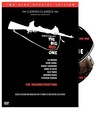
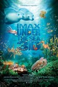
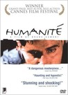
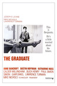
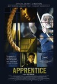
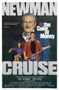
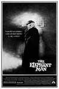
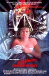

Movie Releases By Score

|
1601.
The Heiresses
Release Date:
January 16, 2019
Chela and Chiquita are both descended from wealthy families in Asunción and have been together for over 30 years. But recently, their financial situation has worsened and they begin selling off their inherited possessions. But when their debts lead to Chiquita being imprisoned on fraud charges, Chela is forced to face a new reality. Driving for the first time in years, she begins to provide a local taxi service to a group of elderly wealthy ladies. As Chela settles into her new life, she encounters the much younger Angy, forging a fresh and invigorating new connection. Chela finally begins to break out of her shell and engage with the world, embarking on her own personal, intimate revolution.
|
1602.
The B-Side: Elsa Dorfman's Portrait Photography
Release Date:
June 30, 2017
Portrait photographer Elsa Dorfman found her medium in 1980: the larger-than-life Polaroid Land 20x24 camera. For the next thirty-five years she captured the "surfaces" of those who visit her Cambridge, Massachusetts studio: families, Beat poets, rock stars, and Harvard notables. As pictures begin to fade and her retirement looms, Dorfman gives Errol Morris an inside tour of her backyard archive.
|
|

|
1603.
The Imposter
Release Date:
July 13, 2012

The Imposter is a chilling factual thriller that chronicles the story of a 13-year-old boy who disappears without a trace from San Antonio, Texas in 1994. Three and a half years later he is found alive, thousands of miles away in a village in southern Spain with a story of kidnapping and torture. His family is overjoyed to bring him home. But all is not quite as it seems. The boy bears many of the same distinguishing marks he always had, but why does he now have a strange accent? Why does he look so different? Any why doesn't the family seem to notice these glaring inconsistencies? It's only when an investigator starts asking questions that this strange tale takes an even stranger turn. The stranger than fiction mystery, which features many twists and turns, is told in a cinematic language that combines documentary and stylized visualizations. Perception is challenged at every turn, and just as the truth begins to dawn on you, another truth merges leaving you even more on edge. (Indomina Releasing)
|
|  |
1604.
The Big Red One (re-release)
Release Date:
November 12, 2004

A reconstruction of Samuel Fuller's 1980 brawny, compassionate adventure of a World War II infantry squadron's battles across Europe. (Warner Bros.)
|

|
1605.
The Cockettes
Release Date:
June 28, 2002
This documentary chronicles the rise and fall of the legendary San Francisco theatrical troupe, a group of flamboyant hippies who decked themselves in gender-bending drag and tons of glitter.
|
1606.
A Bug's Life
Release Date:
November 25, 1998

The story of an ant named Flik who is searching for better ways to be a bug.
|
|

|
1607.
The Usual Suspects
Release Date:
August 16, 1995
Five career criminals in New York are rounded up for a standard police line-up. After release, they get together for a bit of revenge by pulling off a $3 million emerald heist. This scheme brings them to the attention of an underworld crime figure who convinces them to do a highly dangerous job.
|
1608.
Güeros
Release Date:
May 20, 2015
Ever since the National University strike broke out, Sombra and Santos have been living in angst-ridden limbo. Education-less, motionless, purposeless, and unsure of what the strike will bring, they begin to look for strange ways to kill time. But their idiosyncratic routine is interrupted by the unexpected arrival of Tomas, Sombra's kid brother. Unable to fit in amongst these older slackers, Tomas discovers that unsung Mexican folk-rock hero Epigmenio Cruz has been hospitalized somewhere in the city. Tomas convinces Sombra and Santos they must track him down in order to pay their final respects on his deathbed. But what they thought would be a simple trip to find their childhood idol, soon becomes a voyage of self-discovery across Mexico City's invisible frontiers. [Kino Lorber]
|
|
1609.
Unlovable
Release Date:
November 2, 2018
Joy (Charlene deGuzman), a sex and love addicted woman, learns what real intimacy is when she starts making music with a reclusive man.
|
|

|
1610.
Win It All
Release Date:
April 7, 2017
Eddie Garrett agrees to watch a duffel bag for an acquaintance who is heading to prison. When he discovers cash in the bag, he's unable to resist the temptation and winds up deeply in debt. When the prison release is shortened, Eddie suddenly has a small window of time to win all the money back.
|
1611.
A Single Man
Release Date:
December 11, 2009
Set in Los Angeles in 1962, at the height of the Cuban missile crisis, A Single Man, is the story of George Falconer, a 52 year old British college professor who is struggling to find meaning to his life after the death of his long time partner, Jim. George dwells on the past and cannot see his future as we follow him through a single day, where a series of events and encounters, ultimately leads him to decide if there is a meaning to life after Jim. George is consoled by his closest friend Charley, a 48 year old beauty who is wrestling with her own questions about the future. A young student of George’s, Kenny, who is coming to terms with his true nature, stalks George as he feels in him a kindred spirit. (The Weinstein Company)
|
|
1612.
The Messenger
Release Date:
November 13, 2009
In his first leading role, Foster stars as Will Montgomery, a U.S. Army officer who has just returned home from a tour in Iraq and is assigned to the Army’s Casualty Notification service. Partnered with fellow officer Tony Stone to bear the bad news to the loved ones of fallen soldiers, Will faces the challenge of completing his mission while seeking to find comfort and healing back on the home front. When he finds himself drawn to Olivia, to whom he has just delivered the news of her husband's death, Will’s emotional detachment begins to dissolve and the film reveals itself as a surprising, humorous, moving and very human portrait of grief, friendship and survival. (Oscillscope Laboratories)
|
|
|  |
1613.
Under the Sea 3D
Release Date:
February 13, 2009
Under the Sea 3D, a new IMAX adventure, transports moviegoers to some of the most exotic and isolated undersea locations on Earth, including Southern Australia, New Guinea and others in the Indo-Pacific region, allowing them to experience face-to-face encounters with some of the most mysterious and stunning creatures of the sea. It offers a uniquely inspirational and entertaining way to explore the beauty and natural wonder of the oceans, as well as the impact of global climate change. In IMAX 3D, the images will literally leap off the screen and float around the theatre, putting the audience in the movie. (Warner Bros.)
|
1614.
Private Fears in Public Places
Release Date:
April 13, 2007
Six people collide and influence each other's lives in significant ways as they navigate the cold winter months in Paris. (IFC Films)
|
|

|
1615.
The Devil and Daniel Johnston
Release Date:
March 31, 2006

The Devil and Daniel Johnston is a stunning portrait of a musical and artistic genius who nearly slipped away. Daniel Johnston, a manic-depressive genius singer/songwriter/artist, is revealed in this portrait of madness, creativity and love. (Sony Pictures Classics)
|

|
1616.
Sin Nombre
Release Date:
March 20, 2009
Seeking the promise of America, a beautiful young Honduran woman, Sayra, joins her father and uncle on an odyssey to cross the gauntlet of the Latin American countryside en route to the United States. Along the way she crosses paths with a teenage Mexican gang member, El Casper, who is maneuvering to outrun his violent past and elude his unforgiving former associates. Together they must rely on faith, trust and street smarts if they are to survive their increasingly perilous journey towards the hope of new lives. (Focus Features)
|
1617.
Revenge of the Mekons
Release Date:
October 29, 2014
Born out of the 1977 British punk scene, the Mekons progressed from a group of socialist art students with no musical skills to the prolific, raucous progeny of Hank Williams. Joe Angio’s documentary reveals how, four decades into a still-evolving career, the Mekons continue to make original, genre-defying music while surmounting obstacles that would derail most bands. [Music Box Films]
|
|

|
1618.
Mountain Patrol
Release Date:
April 14, 2006
Mountain Patrol: Kekexili is a film inspired by a people's remarkable mission surrounding the illegal Tibetan antelope poaching in the region of Kekexili, the largest animal reserve in China. The story is brought to the screen with great detail by director Lu Chuan. Set against the exquisite backdrop of the Qinghai-Tibetan Plateau, Chuan tells the tale of brave local Tibetans who face death and starvation to save the endangered antelope herds from a band of ruthless hunters. (National Geographic World Films)
|
1619.
Child's Pose
Release Date:
February 19, 2014
When her son is implicated in a hit and run accident, Cornelia Keneres (Luminita Gheorghiu) does everything she can to keep him out of jail.
|
|

|
1620.
Grandma
Release Date:
August 21, 2015
Elle Reid (Lily Tomlin) has just gotten through breaking up with her girlfriend when Elle's granddaughter Sage unexpectedly shows up needing $600 bucks before sundown. Temporarily broke, Grandma Elle and Sage spend the day trying to get their hands on the cash as their unannounced visits to old friends and flames end up rattling skeletons and digging up secrets. [Sony Pictures Classics]
|

|
1621.
Monrovia, Indiana
Release Date:
October 26, 2018
Monrovia, Indiana explores a small town in rural, mid-America and illustrates how values like community service, duty, spiritual life, generosity and authenticity are formed, experienced and lived along with conflicting stereotypes. The film gives a complex and nuanced view of daily life in Monrovia and provides some understanding of a way of life whose influence and force have not always been recognized or understood in the big cities on the east and west coasts of America and in other countries. [Venice]
|
1622.
The Road Warrior
Release Date:
May 21, 1982
In the post-apocalyptic Australian wasteland, Max (Mel Gibson), a cynical drifter, agrees to help a small, gasoline-rich community fight a roving band of marauders. Originally titled Mad Max 2.
|
|
1623.
I, Tonya
Release Date:
December 8, 2017
Based on unbelievable but true events, I, Tonya is the darkly comedic tale of American figure skater Tonya Harding and one of the most sensational scandals in sports history. Though Harding was the first American woman to complete a triple axel in competition, her legacy has forever been defined by her association with an infamous, ill-conceived and worse-executed attack on fellow Olympic competitor Nancy Kerrigan. [Neon]
|
|

|
1624.
God Loves Uganda
Release Date:
October 11, 2013
A powerful exploration of the evangelical campaign to infuse African culture with values imported from America's Christian Right. The film follows American and Ugandan religious leaders fighting sexual immorality and missionaries trying to convince Ugandans to follow biblical law.
|

|
1625.
Evolution
Release Date:
November 25, 2016
Ten-year-old Nicolas (Max Brebant) lives in a remote seaside village populated only by boys his age and adult women. But when he makes a disturbing discovery beneath the ocean waves—a dead boy with a red starfish on his stomach—Nicolas begins to question everything about his existence. What are the half-remembered images he recalls, as if from another life? If the woman he lives with is not his mother, then who is she? And what awaits the boys when they are all suddenly confined to a hospital? [IFC Films]
|
1626.
Sobibór, 14 octobre 1943, 16 heures
Release Date:
October 12, 2001
The full title of this film (Sobibor, Oct. 14, 1943, 4 p.m.) refers to the place, month, day, year and hour of the only successful uprising in a Nazi extermination camp.
|
|
1627.
Fat Girl
Release Date:
October 10, 2001
The story of Anais (Reboux), an overweight 12-year-old, and her beautiful, thin 15-year-old sister, Elena (Mesquida).
|
|
|  |
1628.
Humanité
Release Date:
June 16, 2000
A police detective with unusual methods investigates the murder of an 11-year-old girl; the film is about his daily life, including the yearning he has for his neighbor.
|

|
1629.
How to Change the World
Release Date:
September 9, 2015
In 1971, a group of friends sail into a nuclear test zone, and their protest captures the world's imagination. Using never before seen archive that brings their extraordinary world to life, How To Change The World is the story of the pioneers who founded Greenpeace and defined the modern green movement.
|

|
1630.
Grindhouse
Release Date:
April 6, 2007

An homage to exploitation B-movie thrillers that combines two feature-length segments into one double-bill designed to replicate the grind house theatergoing experience of the 70s and 80s.
|
1631.
Caesar Must Die
Release Date:
February 6, 2013
Inmates at a Rome's Rebibbia Prison perform Shakespeare's Julius Caesar.
|
|

|
1632.
Body Heat
Release Date:
August 28, 1981
Body Heat, a sexy, haunting tale of desire and skullduggery that echoes 1940s film noirs but is charged with an energy and passion that could only flare in the '80s. Sit back and bask in this contemporary classic's wicked warmth. (Warner Bros.)
|

|
1633.
The Pool
Release Date:
September 3, 2008
Impoverished Venkatesh dreams of swimming in the pool of a well-to-do family. When he becomes friendly with the servants of the wealthy household, frequent visits to his favorite swimming spot make him long for a better way of live.
|
1634.
Gerhard Richter - Painting
Release Date:
March 14, 2012
One of the world's greatest living painters, the German artist Gerhard Richter has spent over half a century experimenting with a tremendous range of techniques and ideas, addressing historical crises and mass media representation alongside explorations of chance procedures. The first glimpse inside his studio in decades, Gerhard Richter Painting is exactly that: a thrilling document of the 79-year-old's creative process, juxtaposed with rare archival footage and intimate conversations with his critics and collaborators. (Kino Lorber)
|
|

|
1635.
Benda Bilili!
Release Date:
September 30, 2011
Benda Bilili! follows an unlikely group of musicians in Kinshasa, capital of the war-torn Democratic Republic of Congo. The band, Staff Benda Bilili—in English, “look beyond”—is a group of street musicians composed of four paraplegics and three able-bodied men. The core of the group is four singer/guitarists polio, who use customized tricycles to get around: Ricky, the eldest and a co-founding member of the band; Coco, the band’s composer and co-founding member with Ricky; Junana, the member most disabled by polio, yet the official choreographer; and Coude, a bass player and soprano singer. Joining them is a young and entirely acoustic rhythm section, led by Roger, a teenage prodigy on the satongé, a one-string guitar he designed and built himself out of a tin can. (National Geographic Cinema Ventures)
|
|  |
1636.
The Graduate
Release Date:
December 21, 1967
Shy Benjamin Braddock (Dustin Hoffman) returns home from college with an uncertain future. Then the wife of his father's business partner, the sexy Mrs. Robinson (Anne Bancroft), seduces him, and the affair only deepens his confusion. That is, until he meets the girl of his dreams (Katharine Ross). But there's one problem: she's Mrs. Robinson's daughter. [MGM]
|
1637.
The War Tapes
Release Date:
June 2, 2006
In March 2004, just as the insurgent movement strengthened, several members of one National Guard unit arrived in Iraq, carrying digital video cameras. The War Tapes is the movie they made with Director Deborah Scranton and a team of award-winning filmmakers. It's the first war movie filmed by soldiers themselves on the front lines in Iraq. (SenArt Films)
|
|
1638.
Baden Baden
Release Date:
November 25, 2016
After a failed attempt at working on a foreign film set, 26 year-old Ana returns to her hometown of Strasbourg. Over the scorching summer that follows, she decides to replace her grandmother's bathtub with a walk-in shower, eat peas and carrots with ketchup, drive a Porsche, harvest plums, lose her driver's license, sleep with her best friend and get back together with her ex. In short, over this particular summer, Ana tries to get her life together.
|
|
1639.
Jim & Andy: The Great Beyond — Featuring a Very Special, Contractually Obligated Mention of Tony Clifton
Release Date:
November 17, 2017
Jim Carrey earned critical acclaim and a Golden Globe for the performance, but many of the production’s most Kaufmanesque moments played out behind the scenes, thankfully captured on video by Andy’s former girlfriend, Lynne Margulies and former writing partner, Bob Zmuda. In Jim & Andy, Carrey looks back at the resulting footage 18 years later, reflecting on how he and Andy came up in oddly parallel universes, his experience channelling Andy and Tony and more broadly the spiritual journey of his career.
|
|

|
1640.
A Band Called Death
Release Date:
June 28, 2013
A documentary on the 1970s punk band Death, and their new-found popularity decades after they broke up.
|

|
1641.
The Decline of Western Civilization Part III
Release Date:
July 7, 2000
Penelope Spheeris's third installment in her documentary series examining the Los Angeles punk rock scene in the late 1990s.
|
1642.
Magnolia
Release Date:
December 17, 1999
On one random day in the San Fernando Valley, a dying father, a young wife, a male caretaker, a famous lost son, a police officer in love, a boy genius, an ex-boy genius, a game show host and an estranged daughter will each become part of a dazzling multiplicity of plots, but one story. [New Line Cinema]
|
|

|
1643.
Saturday Night Fever
Release Date:
December 16, 1977
John Travolta stars as a local disco kingpin at the peak of his popularity. Once a week, after six full days of work in a Brooklyn paint store, Tony (Travolta) douses himself with Brut cologne, dons a floral bodyshirt, gabardine pants and platform shoes - and ritualistically prepares himself for "Saturday Night Fever." Through the influence of Stephanie - his more sophisticated dance partner - and Tony's brother - a disillusioned priest - Tony begins to question the way his views life and the narrowness of his perspective. (Paramount Pictures)
|

|
1644.
Sauvage
Release Date:
TBA
Leo is 22 and sells his body on the street for a bit of cash. The men come and go, and he stays right here... longing for love. He doesn’t know what the future will bring. He hits the road. His heart is pounding.
|

|
1645.
Starving the Beast
Release Date:
September 2, 2016
Starving the Beast examines the on-going power struggle on college campuses across the nation as political and market-oriented forces push to disrupt and reform America's public universities. The film documents a philosophical shift that seeks to reframe public higher education as a "value proposition" to be borne by the beneficiary of a college degree rather than as a "public good" for society. Financial winners and losers emerge in a struggle poised to profoundly change public higher education. The film focuses on dramas playing out at the University of Wisconsin, University of Virginia, University of North Carolina, Louisiana State University, University of Texas and Texas A&M.
|
1646.
Pump Up the Volume
Release Date:
August 22, 1990
A shy teen turns on the high school crowd when he broadcasts outrageous nightly monologues on a pirate radio station. (New Line Cinema)
|
|

|
1647.
Calvary
Release Date:
August 1, 2014
Father James (Brendan Gleeson) is a good priest who is faced with sinister and troubling circumstances brought about by a mysterious member of his parish. Although he continues to comfort his own fragile daughter (Kely Reilly) and reach out to help members of his church with their various scurrilous moral—and often comic—problems, he feels sinister forces closing in, and begins to wonder if he will have the courage to face his own personal Calvary.
|

|
1648.
The House I Live In
Release Date:
October 5, 2012
As America remains embroiled in conflict overseas, a less visible war is taking place at home, costing countless lives, destroying families, and inflicting untold damage on future generations of Americans. Over forty years, the War on Drugs has accounted for
more than 45 million arrests, made America the world's largest jailer, and damaged poor communities at home and abroad. Yet for all that, drugs are cheaper, purer, and more available today than ever before. (Charlotte Street Films)
|

|
1649.
Blissfully Yours
Release Date:
September 24, 2004
This film focuses on a Burmese refugee whose fate has linked him to the lives of two Thai women in a border town. (Kick the Machine)
|
|  |
1650.
Apprentice
Release Date:
March 3, 2017
When ambitious young correctional officer Aiman is transferred to the country's highest-security prison, he catches the attention of the seasoned chief executioner Rahim. Aiman's desire to become the hangman's apprentice is not only professional but born of an unspeakable urge to reconnect with a past that haunts him. [Film Movement]
|

|
1651.
People's Republic of Desire
Release Date:
November 30, 2018
In a digital universe where live streamers earn as much as $200K a month, can virtual relationships replace real-life human connection? People's Republic of Desire tells the stories of two such online stars who've risen from isolation to fame and fortune in China. The film takes us on a vérité journey through their live streaming showrooms, which have become virtual gathering places for hundreds of millions - from the super rich who lavish performers with digital gifts, to poor migrant workers who worship them. The characters are brought together in a series of bizarre online idol competitions, where they discover that happiness in their virtual world may be as elusive as in the real one.
|
1652.
Little Fish
Release Date:
February 24, 2006
How do you learn to love again when the pain of the past won't let you go? When you're 32 with a troubled history and a doubtful future, it’s a question that isn't so easy to answer. And for Tracy Heart (Blanchett), it's a question she can no longer ignore. (First Look Features)
|
|
1653.
Keep On Keepin' On
Release Date:
September 19, 2014
In Keep On Keepin’ On, a 23-year-old, blind piano prodigy, Justin Kauflin, who suffers terrible stage fright, finds his way to jazz legend and teacher Clark Terry, 89. Over the course of filming, Terry begins to lose his sight as an unlikely bond begins to take hold. When Justin is invited to compete in an elite international competition, Clark’s health takes a turn for the worse.
|
|
1654.
The Hunt
Release Date:
July 12, 2013
A teacher lives a lonely life, all the while struggling over his son's custody. His life slowly gets better as he finds love and receives good news from his son, but his new luck is about to be brutally shattered by a lie.
|
|

|
1655.
The Beguiled
Release Date:
June 23, 2017
The story unfolds during the Civil War, at a Southern girls’ boarding school. Its sheltered young women take in an injured enemy soldier. As they provide refuge and tend to his wounds, the house is taken over with sexual tension and dangerous rivalries, and taboos are broken in an unexpected turn of events.
|

|
1656.
Presenting Princess Shaw
Release Date:
May 27, 2016
The true story of the incredible Princess Shaw and the enigmatic composer Kutiman, who discovers her from the other side of the world. By day, Samantha Montgomery cares for the elderly in one of New Orleans’s toughest neighborhoods. By night, she writes and sings her own songs as Princess Shaw on her confessional YouTube channel. Raw and vulnerable, her voice is a diamond in the rough. Across the globe, Ophir Kutiel creates video mash ups of amateur YouTube performers. Known as Kutiman, he is a composer, a musician, and a pioneering video artist embraced by the world of fine art. Two strangers, almost 7,000 miles apart, begin to build a song. The film unfolds as Kutiman pairs Princess Shaw’s emotional performances in a beautiful expression of generosity and compassion, revealing the bonafide star underneath and her fight to never give up on her dreams.
|
1657.
Somers Town
Release Date:
July 15, 2009
Tomo is a troubled young lad who runs away to London. There he meets Marek, a shy Polish teenager who shares a small flat with his laborer father in a rundown area. When Marek agrees to let Tomo stay with them, unbeknownst to his father, the pair form a strong bond as they work odd jobs for an eccentric neighbor and compete for the attention of Maria, a beautiful French waitress, and try to avoid discovery by Marek's father. (Film Movement)
|
|

|
1658.
Under the City's Skin
Release Date:
March 14, 2003
An Iranian woman takes dramatic measures to save her home and family.
|
1659.
Daughter from Danang
Release Date:
November 1, 2002
Through intimate and sometimes excruciating moments, Daughter from Danang profoundly shows how wide the chasms of cultural difference and how deep the wounds of war can run - even within one family. (Quad Cinema)
|
|

|
1660.
Scratch
Release Date:
February 15, 2002
A feature length film about the hip-hop DJ and today's turntablist movement. From the South Bronx in the 70's to San Francisco today, the world's best scratchers, diggers, party-rockers and producers celebrate beats, breaks, battles, and the infinite possibilities of vinyl. (Palm Pictures)
|

|
1661.
Shanghai Noon
Release Date:
May 26, 2000
When Lo Fong (Roger Yuan) kidnaps the Emperor's daughter, Princess Pei Pei (Lucy Liu), and takes her to America, the Emperor sends his best Imperial Guardsman to find her. Chon Wang (Jackie Chan), one of the Emperor's least distinguished guards, insists on joining them. He feels responsible for the kidnapping and wants to make amends. However, while the rescue party scours the West, Chon Wang gets separated from the group and soon becomes lost. When he crosses paths with Roy O'Bannon (Owen Wilson), a small-time outlaw, the two become unlikely allies.
|
1662.
Philomena
Release Date:
November 22, 2013
A world-weary political journalist picks up the story of a woman's search for her son, who was taken away from her decades ago after she became pregnant and was forced to live in a convent.
|
|

|
1663.
Jauja
Release Date:
March 20, 2015
Captain Gunnar Dinesen (Viggo Mortensen) has come from abroad with his fifteen year-old daughter to take an engineering job with the Argentine army. Being the only female in the area, Ingeborg creates quite a stir among the men. She falls in love with a young soldier, and one night they run away together. When Dinesen realizes what has happened, he decides to venture into enemy territory, against his men’s wishes, to find the young couple. [Cinema Guild]
|

|
1664.
Get Low
Release Date:
July 30, 2010
A film spun out of equal parts folk tale, fable and real-life legend about the mysterious, 1930s Tennessee hermit who famously threw his own rollicking funeral party... while he was still alive.
|
1665.
Blue Collar
Release Date:
February 10, 1978
Three workers, Zeke (Richard Pryor), Jerry (Harvey Keitel), and Smokey (Yaphet Kotto), are working at a car plant and drinking their beers together. One night, when they steal away from their wives to have some fun, they get the idea to rob the local union's bureau safe. First they think it is a flop, because they get only six hundred dollars out of it, but then Zeke realizes that they also have gotten some "hot" material. They decide to blackmail their union. The best reason for that is the union itself. All three are provoked by the fact that the union claims to have lost ten thousand dollars by their robbery.
|
|
|  |
1666.
The Color of Money
Release Date:
October 17, 1986
Fast Eddie Felson (Paul Newman) teaches a cocky but immensely talented protégé (Tom Cruise) the ropes of pool hustling, which in turn inspires him to make an unlikely comeback.
|
1667.
The Immigrant
Release Date:
May 16, 2014
1921. In search of a new start and the American dream, Ewa Cybulski (Marion Cotillard) and her sister Magda (Angela Sarafyan) sail to New York from their native Poland. When they reach Ellis Island, doctors discover that Magda is ill, and the two women are separated. Ewa is released onto the mean streets of Manhattan while her sister is quarantined. Alone, with nowhere to turn and desperate to reunite with Magda, she quickly falls prey to Bruno (Joaquin Phoenix), a charming but wicked man who takes her in and forces her into prostitution. And then one day, Ewa encounters Bruno's cousin, the debonair magician Orlando (Jeremy Renner). He sweeps Ewa off her feet and quickly becomes her only chance to escape the nightmare in which she finds herself. [The Wild Bunch]
|
|

|
1668.
Don't Call Me Son
Release Date:
November 2, 2016
Tall, dark, androgynously handsome, Pierre wears eyeliner and a black lace g-string, while having sex with both boys and girls. The confusion only goes deeper when the teenager’s single, working-class mom is arrested for having stolen him (and his “sister”) at birth. Thanks to the wonders of DNA, he’s returned to his biological parents: bourgeois, straight-laced and thrilled to have him back...at least until he joins them at a bowling alley in a zebra-print mini dress.
|

|
1669.
The Three Burials of Melquiades Estrada
Release Date:
December 16, 2005
A man is shot and quickly buried in the high desert of West Texas. The body is found and reburied in Van Horn's town cemetery. Peter Perkins (Jones), a local ranch foreman kidnaps a Border Patrolman and forces him to disinter the body. With his captive in tow and the body tied to a mule, Pete undertakes a dangerous and quixotic journey into Mexico. (Sony Pictures Classics)
|

|
1670.
Detroit
Release Date:
July 28, 2017
Detroit tells the gripping story of one of the darkest moments during the civil unrest that rocked Detroit in the summer of '67.
|

|
1671.
The Edge of Seventeen
Release Date:
November 18, 2016
Everyone knows that growing up is hard, and life is no easier for high school junior Nadine (Hailee Steinfeld), who is already at peak awkwardness when her all-star older brother Darian (Blake Jenner) starts dating her best friend Krista (Haley Lu Richardson). All at once, Nadine feels more alone than ever, until the unexpected friendship of a thoughtful boy (Hayden Szeto) gives her a glimmer of hope that things just might not be so terrible after all.
|

|
1672.
Brooklyn Castle
Release Date:
October 19, 2012
Brooklyn Castle tells the stories of five members of the chess team at a below-the-poverty-line inner city junior high school that has won more national championships than any other in the country. The film follows the challenges these kids face in their personal lives as well as on the chessboard, and is as much about the sting of their losses as it is about the anticipation of their victories. Ironically, the biggest obstacle thrust upon them arises not from other competitors but from recessionary budget cuts to all the extracurricular activities at their school. BROOKLYN CASTLE shows how these kids’ dedication to chess magnifies their belief in what is possible for their lives. After all, if they can master the world’s most difficult game, what can’t they do? (Producers Distribution Agency)
|
1673.
Logan
Release Date:
March 3, 2017
In the near future, a weary Logan cares for an ailing Professor X in a hideout on the Mexican border. But Logan's attempts to hide from the world and his legacy are up-ended when a young mutant arrives, being pursued by dark forces.
|
|

|
1674.
Circo
Release Date:
April 1, 2011
The Ponce family's hardscrabble circus has lived and performed on the back roads of Mexico since the 19th century. But can their way of life survive into the 21st century? Against the backdrop of Mexico’s collapsing rural economy, the ringmaster must choose between his family tradition and a wife who wants a better life for their
family outside the circus. (First Run Features)
|
|  |
1675.
The Elephant Man
Release Date:
October 10, 1980
A Victorian surgeon rescues a heavily disfigured man who is mistreated while scraping a living as a side-show freak. Behind his monstrous facade, there is revealed a person of intelligence and sensitivity.
|
1676.
Stephanie Daley
Release Date:
April 20, 2007
This film weaves two parallel journeys into a sublime masterpiece about the absolute nature of truth. (Regent Releasing)
|
|

|
1677.
Water
Release Date:
April 28, 2006
Set in 1938 Colonial India, against Mahatma Gandhi's rise to power, Water begins when 8-year-old Chuyia is widowed and sent to a home where Hindu widows must live in penitence. (Fox Searchlight)
|

|
1678.
The Rape of Europa
Release Date:
September 14, 2007
The Rape of Europa is an epic journey through seven countries that follows the violent whirlwind of fanaticism, greed, and warfare, which threatened to wipe out the artistic heritage of Europe. For 12 long years, the Nazis looted and destroyed art on an unprecedented scale in history. But heroic young art historians and curators from America, as well as across Europe, fought back. They did so in a miraculous campaign to rescue then return the millions of lost, hidden, and stolen treasures. (Menemsha)
|

|
1679.
Marlina the Murderer in Four Acts
Release Date:
June 22, 2018
In the deserted hills of an Indonesian island, Marlina, a young widow, is attacked and robbed of all her livestock by a gang of seven bandits. She then defends herself, setting out on a journey to find justice, empowerment, retribution and redemption. But the road is long, especially when she begins to be haunted by the ghost of her victim. [Icarus Films]
|

|
1680.
Gerald's Game
Release Date:
September 29, 2017
While trying to spice up their marriage in their remote lake house, Jessie must fight to survive when her husband dies unexpectedly, leaving her handcuffed to their bed frame.
|
1681.
Home of the Brave
Release Date:
October 27, 2004
A documentary about Viola Liuzzo, the only white woman murdered in the civil rights movement in America and why we DON'T know who she is. Told through the eyes of her children, the film follows the on-going struggle of an American family to survive the consequences of their mother's heroism and the mystery behind her killing. (Emerging Pictures)
|
|

|
1682.
Bukowski: Born into This
Release Date:
May 28, 2004
The first comprehensive documentary on author Charles Bukowski, one of those rare writers whose work created a myth of epic proportions around its creator. (Magnolia Pictures)
|

|
1683.
Monsoon Wedding
Release Date:
February 22, 2002
This exuberant ensemble comedy links the stories of far-flung family members, their servants and secret lovers as a Punjabi family in Delhi reunites for their daughter's wedding. (USA Films)
|

|
1684.
Italian for Beginners
Release Date:
January 18, 2002
Follows the stories of six insecure singles whose lives interweave one dreary Copenhagen winter. (Miramax Films)
|
1685.
Louder Than a Bomb
Release Date:
May 18, 2011
Louder Than a Bomb tells the story of four Chicago high school poetry teams as they prepare to compete in the world’s largest youth slam. By turns hopeful and heartbreaking, the film captures the turbulent lives of these unforgettable kids, exploring the ways writing shapes their world, and vice versa. While the topics they tackle are often deeply personal, what they put into their poems—and what they get out of them—is universal: the defining work of finding one’s voice. (Balcony Releasing)
|
|
1686.
A Christmas Story
Release Date:
November 18, 1983
This delightfully funny holiday gem tells the story of Ralphie Parker a 1940's nine-year-old who pulls out all the stops to obtain the ultimate Christmas present. (Warner Bros.)
|
|
1687.
The Big Easy
Release Date:
August 21, 1987
Set in New Orleans. Remy McSwain, lieutenant in Homicide finds that he has two problems, the first of a series of gang killings and Ann Osborne, a beautiful attorney from the D.A.'s police corruption task force in his office. He begins a relationship with her as the killings continue only to have charges filed against him for accepting bribes as he stumbles on a police corruption Sting. While this is happening, the criminals insist that none of the crime gangs are behind the killings.
|
|

|
1688.
Code Black
Release Date:
June 20, 2014
In his vivid and thought-provoking filmmaking debut, physician Ryan McGarry gives us unprecedented access to America’s busiest Emergency Department. Amidst real life-and-death situations, McGarry follows a dedicated team of charismatic, young doctors-in-training as they wrestle openly with both their ideals and with the realities of saving lives in a complex and overburdened system. Their training ground and source of inspiration is “C-Booth,” Los Angeles County Hospital’s legendary trauma bay, the birthplace of Emergency Medicine, where “more people have died and more people have been saved than in any other square footage in the United States.” Code Black offers a tense, doctor’s-eye view, right into the heart of the healthcare debate – bringing us face to face with America’s only 24/7 safety net.
|

|
1689.
The Wife
Release Date:
August 17, 2018
After nearly forty years of marriage, Joan and Joe Castleman (Glenn Close and Jonathan Pryce) are complements. Where Joe is casual, Joan is elegant. Where Joe is vain, Joan is self-effacing. And where Joe enjoys his very public role as Great American Novelist, Joan pours her considerable intellect, grace, charm, and diplomacy into the private role of Great Man’s Wife. Joe is about to be awarded the Nobel Prize for his acclaimed and prolific body of work. Joe’s literary star has blazed since he and Joan first met in the late 1950. The Wife interweaves the story of the couple’s youthful passion and ambition with a portrait of a marriage, thirty-plus years later—a lifetime’s shared compromises, secrets, betrayals, and mutual love. [Sony Pictures Classics]
|
1690.
Dheepan
Release Date:
May 6, 2016
Dheepan is a Tamil freedom fighter, a Tiger. In Sri Lanka, the Civil War is reaching its end, and defeat is near. Dheepan decides to flee, taking with him two strangers – a woman and a little girl – hoping that they will make it easier for him to claim asylum in Europe. Arriving in Paris, the ‘family’ moves from one temporary home to another until Dheepan finds work as the caretaker of a run-down housing block in the suburbs. He works to build a new life and a real home for his ‘wife’ and his ‘daughter’, but the daily violence he confronts quickly reopens his war wounds, and Dheepan is forced to reconnect with his warrior’s instincts to protect the people he hopes will become his true family. [Sundance Selects]
|
|

|
1691.
Career Girls
Release Date:
August 8, 1997
2 young women reunite and rekindle their friendship after having said goodbye at their college graduation, six years earlier.
|

|
1692.
Breaking the Waves
Release Date:
November 13, 1996
Set in a remote coastal village in northern Scotland, this is the extraordinary tale of a young woman's love and devotion to her husband, recently paralyzed in an oil rig accident.
|

|
1693.
The Disaster Artist
Release Date:
December 1, 2017
With The Disaster Artist, James Franco transforms the tragicomic true-story of aspiring filmmaker and infamous Hollywood outsider Tommy Wiseau – an artist whose passion was as sincere as his methods were questionable – into a celebration of friendship, artistic expression, and dreams pursued against insurmountable odds. Based on Greg Sestero’s best-selling tell-all about the making of Tommy's cult-classic disasterpiece The Room (“The Greatest Bad Movie Ever Made”), The Disaster Artist is a hilarious and welcome reminder that there is more than one way to become a legend— and no limit to what you can achieve when you have absolutely no idea what you're doing. [A24]
|
1694.
A Touch of Sin
Release Date:
October 4, 2013
An angry miner, enraged by widespread corruption in his village, decides to take justice into his own hands. A rootless migrant discovers the infinite possibilities of owning a firearm. A young receptionist, who dates a married man and works at a local sauna, is pushed beyond her limits by an abusive client. And a young factory worker goes from one discouraging job to the next, only to face increasingly degrading circumstances. [Kino Lorber]
|
|

|
1695.
Bill Cunningham New York
Release Date:
March 16, 2011
“We all get dressed for Bill,” says Vogue editrix Anna Wintour. The “Bill” in question is 80+ New York Times photographer Bill Cunningham. For decades, this Schwinn-riding cultural anthropologist has been obsessively and inventively chronicling fashion trends and high society charity soirées for the Times Style section in his columns “On the Street” and “Evening Hours.” Documenting uptown fixtures (Wintour, Tom Wolfe, Brooke Astor, David Rockefeller—who all appear in the film out of their love for Bill), downtown eccentrics and everyone in between, Cunningham’s enormous body of work is more reliable than any catwalk as an expression of time, place and individual flair. In turn, Bill Cunningham New York is a delicate, funny and often poignant portrait of a dedicated artist whose only wealth is his own humanity and unassuming grace. (Zeitgeist Films)
|

|
1696.
Lo and Behold: Reveries of the Connected World
Release Date:
August 19, 2016
Werner Herzog chronicles the virtual world from its origins to its outermost reaches, exploring the digital landscape with the same curiosity and imagination he previously trained on earthly destinations as disparate as the Amazon, the Sahara, the South Pole and the Australian outback. Working with NetScout, a world leader in real time service assurance and cybersecurity, Herzog leads viewers on a journey through a series of provocative conversations that reveal the ways in which the online world has transformed how virtually everything in the real world works - from business to education, space travel to healthcare, and the very heart of how we conduct our personal relationships.
|

|
1697.
Service (Serbis)
Release Date:
January 30, 2009
The Pineda family operates and lives in a run-down movie house that shows dated sexy double-feature films. As they go about their daily activities, we get a glimpse of how the family suffers and deals with each other’s sins and vices. Preoccupied with their own personal demons, they are unmindful that inside their movie theater another kind of business is going on between the “serbis” boys and the gay patrons. [Regent Releasing]
|
|  |
1698.
A Nightmare on Elm Street
Release Date:
November 16, 1984
Nancy Thompson is suffering from violent nightmares about a badly burned man wearing a glove made of knives. She quickly learns that this man – child molester Freddy Krueger – is also terrorizing the dreams of her friends and boyfriend, Glen. As they begin to die one by one in their sleep, Nancy learns, that years prior, the parents of Elm Street burned Krueger alive – and now Freddy is back to claim their children’s lives as revenge! As the teenagers of Elm Street fight to stay awake, Nancy must save their lives and her own by bringing Freddy out of their dreams and back into the real world to destroy him forever. (New Line Cinema)
|
1699.
Keep Quiet
Release Date:
February 10, 2017
As vice-president of Hungary’s far-right extremist party, Csanad Szegedi espoused anti-Semitic rhetoric and Holocaust denials, and founded the Hungarian Guard, a now-banned militia inspired by a pro-Nazi group complicit in the murder of thousands of Jews during WWII. But his life was soon upended when Szegedi’s maternal grandparents were revealed to be Jewish and his beloved grandmother an Auschwitz survivor who had hidden her faith, fearing further persecution. Keep Quiet depicts Szegedi’s three-year journey to embrace his newfound religion. But is his transformation genuine? Or does he simply have nowhere else to turn? [Kino Lorber]
|
|
1700.
Dig!
Release Date:
October 1, 2004
Dig! is a feature-length documentary shot over seven years about musicians Anton Newcombe, leader of the Brian Jonestown Massacre, and Courtney Taylor, head of the Dandy Warhols, star crossed friends and bitter rivals. (Palm Pictures)
|
|